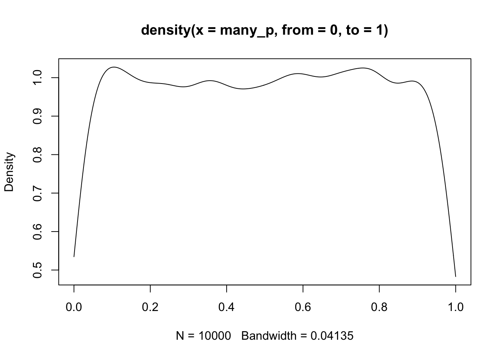
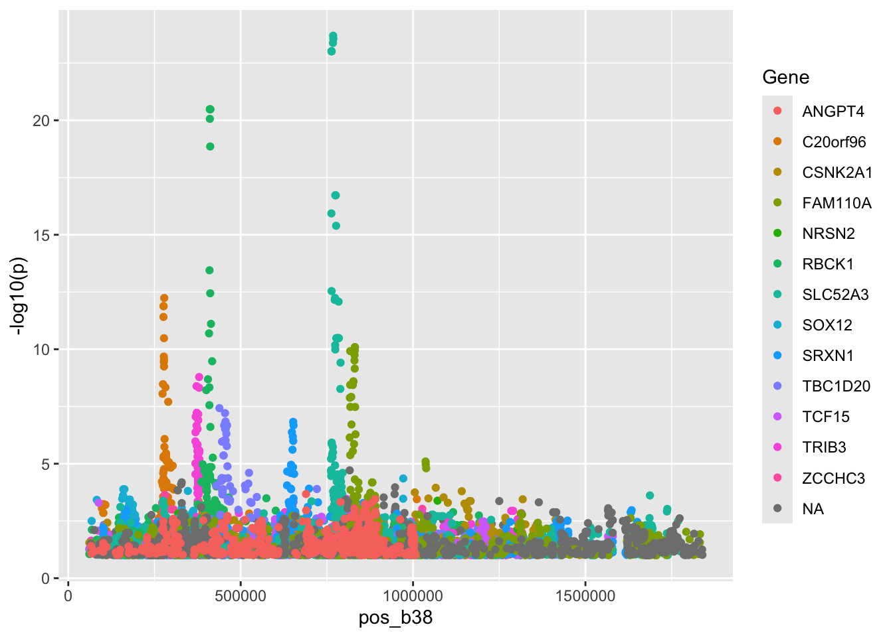
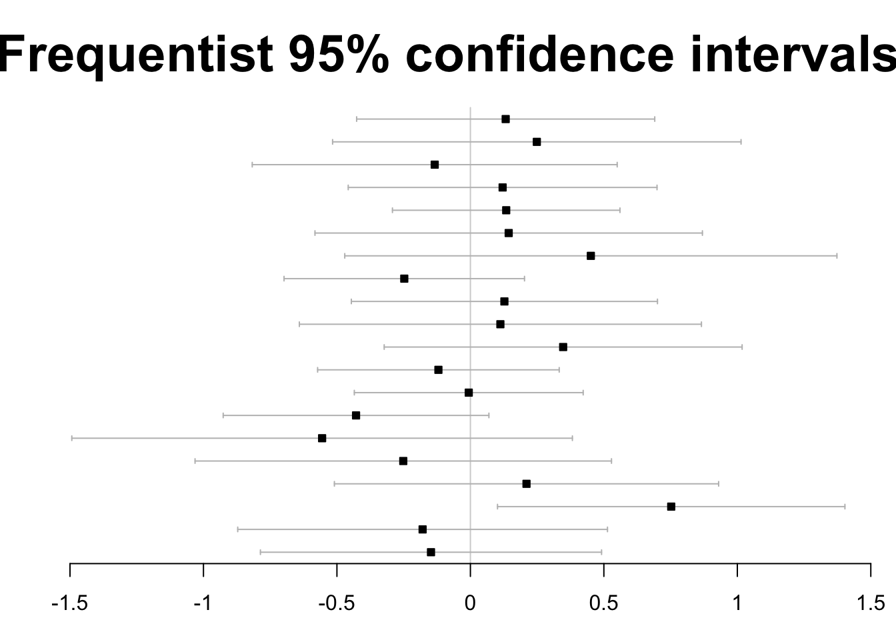
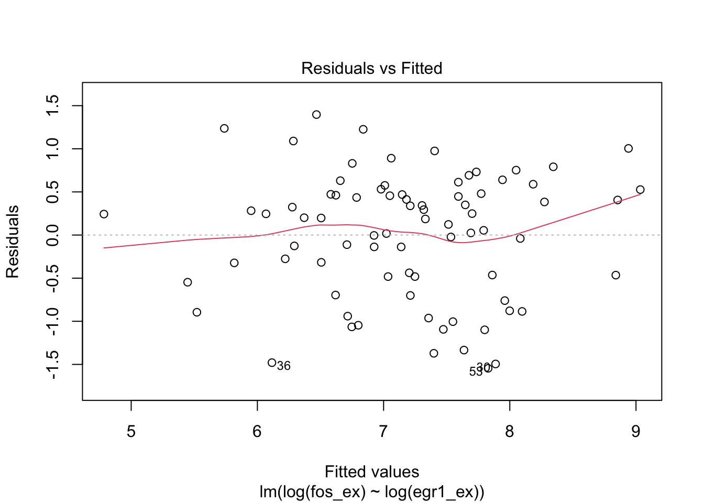
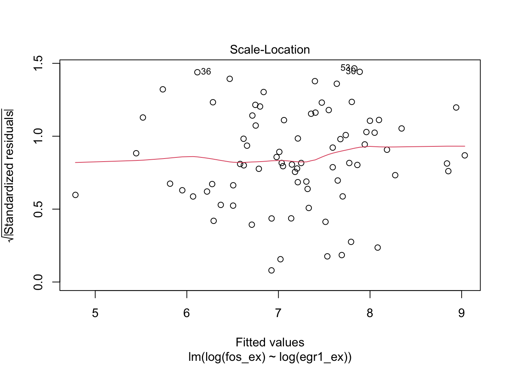

S5_inference: FDR, linear models, and GLMs
Vincent J. Carey, stvjc at channing.harvard.edu
January 09, 2025
Source:vignettes/S5_linear_models.Rmd
S5_linear_models.RmdReview of some inference concepts
Error rates: size and power
-
Null hypothesis testing framework: we typically aim to assess whether an intervention affects a parameter value for a certain population
- does the average value of some quantity change after treatment?
- does changing the composition of a deck of cards affect the probability of seeing a given suit when drawing a card?
Type I error: reject the null when it is actually true
Type II error: fail to reject null when it is actually false
p-value: a condensation of the data and assumptions
The p-value for a test is the probability of observing the statistic seen in the experiment or any more extreme value of the statistic given that the null hypothesis is true.
binom.test(27, 100, 1/4)##
## Exact binomial test
##
## data: 27 and 100
## number of successes = 27, number of trials = 100, p-value = 0.6446
## alternative hypothesis: true probability of success is not equal to 0.25
## 95 percent confidence interval:
## 0.1860664 0.3680163
## sample estimates:
## probability of success
## 0.27This two-sided p-value is obtained via
## [1] 0.6446304because all the results of 27 or more hearts seen, or 22 or fewer hearts seen are “as or more extreme” as what we have observed.
Because the p-value is a probability, its value reflects uncertainty in our assessment of the relation of the data to null hypothesis. Large p-values suggest that there is not much reason to use the data to reject the null hypothesis; small p-values suggest that either the null hypothesis is false or a very rare event has occurred.
Confidence interval: an alternative expression of uncertainty
If we observed 30 hearts in 100 top-card draws, our test report would be:
binom.test(30, 100, 1/4)##
## Exact binomial test
##
## data: 30 and 100
## number of successes = 30, number of trials = 100, p-value = 0.2491
## alternative hypothesis: true probability of success is not equal to 0.25
## 95 percent confidence interval:
## 0.2124064 0.3998147
## sample estimates:
## probability of success
## 0.3The confidence interval is a random interval derived from the data that has the property that it will include the true value of the population parameter of interest with a specified probability.
stats = c(27:42)
tests = lapply(stats, function(x) binom.test(x, 100, .25))
low = sapply(tests, function(x) x$conf.int[1])
hi = sapply(tests, function(x) x$conf.int[2])
ests = sapply(tests, "[[", "statistic")
plot(stats, ests, ylim=c(0, .6), main="95% Confidence intervals", xlab="# hearts seen in 100 draws",
ylab="estimated proportion of hearts")
segments( stats, low, stats, hi)
abline(h=.25, lty=2)Exercise: For what value of the statistic would you reject the null hypothesis of probability 1/4 for heart?
Exercise: Use 99% as the coverage probability and produce the display.
Multiple comparisons
Everything we’ve seen thus far looks at a single test in various ways.
A hallmark of work in genomics is the necessity of performing many tests, because of the large number of features and hypotheses in play.
Fact: When many tests are conducted on true null hypotheses, the distribution of the collection of p-values thereby obtained is uniform on (0,1].
To illustrate this we will produce 10000 samples from N(100,1) and conduct the t test with null mean 100, yielding 10000 p-values.
many_x = replicate(10000, rnorm(10, 100))
many_p = apply(many_x, 2, function(x) t.test(x, mu=100)$p.value)
plot(density(many_p, from=0, to=1))
This display shows a limitation of density estimation on a fixed interval – a “boundary effect”, because data “up against” the boundary get sparser as you get closer to the boundary. But it is consistent with the property of a uniform distribution on [0,1]: the true density is 1.
Bonferroni’s correction to achieve Family-Wise Error Rate (FWER) control
The concept of Type I error is very general, and could be deployed to define operating characteristics for any kind of inference procedure.
This table is frequently seen in discussions of multiple testing, it is from Holmes and Huber’s Modern Statistics for Modern Biology.

decisiontab
Suppose we have \(m\) hypotheses to test and we wish the overall probability of our family of tests to have Type I error rate \(\alpha\). Using the table symbols, this is \(Pr(V>0) < \alpha\).
Bonferroni’s method is to declare significance only for those tests with \(p\)-value less than \(\alpha/m\).
This procedure (and related improvements for FWER control) also implies a transformation of \(p\)-values, that we will see shortly.
False discovery rate
Referring to the table above, the false discovery rate (FDR) is the expected value of \(V/max(R,1)\). If \(R = 0\), \(V = 0\) and FDR is zero. Otherwise, we can think of FDR as a kind of budget: we will reject \(R\) hypotheses and our expection is that \(V\) will be false. If we are “following up” with confirmatory experiments on \(R\) genes and can afford “wasting” \(V\) tests, we would accept an FDR of \(V/R\).
Of course these are probabilistic characteristics of procedures that hold with stated probabilities when assumptions are satisfied.
Adjusted p-values
Since we are so accustomed to the single-number summary \(p\), it is typical to base rejection decisions on transformed \(p\)-values. The multtest package takes care of this.
library(multtest)
options(digits=3)
tab = mt.rawp2adjp(many_p)
head(tab[[1]],10)## rawp Bonferroni Holm Hochberg SidakSS SidakSD BH BY ABH
## [1,] 9.27e-05 0.927 0.927 0.927 0.604 0.604 0.645 1 0.645
## [2,] 1.81e-04 1.000 1.000 1.000 0.836 0.836 0.645 1 0.645
## [3,] 3.93e-04 1.000 1.000 1.000 0.980 0.980 0.645 1 0.645
## [4,] 4.35e-04 1.000 1.000 1.000 0.987 0.987 0.645 1 0.645
## [5,] 4.40e-04 1.000 1.000 1.000 0.988 0.988 0.645 1 0.645
## [6,] 4.43e-04 1.000 1.000 1.000 0.988 0.988 0.645 1 0.645
## [7,] 4.96e-04 1.000 1.000 1.000 0.993 0.993 0.645 1 0.645
## [8,] 6.28e-04 1.000 1.000 1.000 0.998 0.998 0.645 1 0.645
## [9,] 6.82e-04 1.000 1.000 1.000 0.999 0.999 0.645 1 0.645
## [10,] 7.14e-04 1.000 1.000 1.000 0.999 0.999 0.645 1 0.645
## TSBH_0.05
## [1,] 0.645
## [2,] 0.645
## [3,] 0.645
## [4,] 0.645
## [5,] 0.645
## [6,] 0.645
## [7,] 0.645
## [8,] 0.645
## [9,] 0.645
## [10,] 0.645By default, mt.rawp2adp produces a number of adjustments – we are concerned
at present with the columns rawp (the p-values sorted from lowest on), Bonferroni
(which gives the transformation \(p\) to min(1, mp)$ for \(m\) tests),
and BH (the Benjamini-Hochberg FDR transformation). The implication
of this table is that with FWER control at 0.05, our data
would not support rejection of any of our
hypotheses (all of which assert that the mean of a sample of 10 random
normals is equal to 100). Likewise with FDR control at any value up to
0.77. However, we see that had we accepted an FDR control at 0.8,
we could reject 8 hypotheses.
Exercise: replace the first p-value in many_p with 1e-6 and obtain the
associated adjusted p-values.
Adjustments via weighted FDR
A useful review is available. This section addresses only one of the methods in the review, which is found to have good performance, though in some contexts the authors’ alternatives appear superior.
Setup
We need the IHW package and will do some visualization as well.
Here’s the key resource with p-values that we want to interpret.
## chr pos_b38 marker rsid effectallele otherallele eaf p
## 1 20 61066 20:61066:T:C rs1031667049 C T 0.0285 0.774
## 2 20 61083 20:61083:C:T rs956068117 T C 0.1010 0.767
## 3 20 61098 20:61098:C:T rs933208784 T C 0.0155 0.117
## beta se pheno mode tag imputersq n Gene
## 1 0.0226 0.0784 ENSG00000196476.11 eqtl GTEx-eqtl NA 515 C20orf96
## 2 0.0123 0.0413 ENSG00000196476.11 eqtl GTEx-eqtl NA 515 C20orf96
## 3 -0.1615 0.1029 ENSG00000196476.11 eqtl GTEx-eqtl NA 515 C20orf96
## seqnames start end width strand gene_id gene_name gene_biotype
## 1 20 270863 290778 19916 - ENSG00000196476 C20orf96 protein_coding
## 2 20 270863 290778 19916 - ENSG00000196476 C20orf96 protein_coding
## 3 20 270863 290778 19916 - ENSG00000196476 C20orf96 protein_coding
## seq_coord_system symbol entrezid
## 1 chromosome C20orf96 140680
## 2 chromosome C20orf96 140680
## 3 chromosome C20orf96 140680What we have here are variant-expression association tests conducted in the GTEx project. Thus this is a small excerpt from a collection of “GWAS”, in which the outcome is tissue-specific expression of a gene, and predictors are formed by SNP genotypes and adjustments carried out in the GTEx analysis pipeline.
Here’s a composite manhattan plot:
pl1 = ggplot(gtdat[gtdat$p<.1,], aes(x=pos_b38, y=-log10(p), colour=Gene)) + geom_point()
#ggplotly(pl1)
pl1
Demonstration 1: Use allele frequency to form strata for FDR weighting
The eaf field is the frequency with which the “effect allele” was
reported by SNP-Nexus.
## covariate1
## (0,0.01] (0.01,0.05] (0.05,0.1] (0.1,0.3] (0.3,0.6]
## 3865 33697 13860 27840 20738We run the IHW algorithm using the variant frequency strata, with a conjecture that very rare or very common variants may be downweighted in a way that is advantageous to discovery.
demo1 = ihw(gtdat$p, covariate1, alpha=0.05)
basic_fdr = mt.rawp2adjp(gtdat$p)The weighting procedure involves random resampling from the data, to reduce risk of overfitting, and to allow assessment of consistency across multiple “folds” or random subsets.
plot(demo1)Compare the weighted, unweighted, and conventional rejection numbers:
newp = adj_pvalues(demo1)
sum(newp < 0.05)## [1] 276
sum(basic_fdr$adjp[,"BH"] < 0.05)## [1] 257
sum(gtdat$p < 5e-8)## [1] 68Optional: Considerations on Bayesian multiple testing
Various comments and references in this stackexchange address the relationship between inferential framework and approach to multiple testing. A paper by Gelman and Loken surveys the concept in an illuminating way.
A paper in the European Journal of Epidemiology presents considerations on multiple comparisons from a Bayesian perspective, arguing that the issue is “surrounded by confusion and controversy”.
Here is a simple approach to visualizing 20 tests, assumed independent, in a frequenist framework, focusing on 95% confidence intervals.
# from https://link.springer.com/content/pdf/10.1007/s10654-019-00517-2.pdf
# Sjolander and vanSteenlandt 2019 Eur J Epi
library(forestplot)
library(bayesm)
set.seed(1)
n = 10
J = 20
beta = 0
Y = matrix(rnorm(n*J, mean=beta), nrow=n, ncol=J)
est = colMeans(Y)
se = apply(X=Y, MARGIN=2, FUN=sd)/sqrt(n)
q = qt(p=0.975, df=n-1)
ci.l = est-q*se
ci.u = est+q*se
forestplot(
labeltext=rep("", J),
mean=est, lower=ci.l,
upper=ci.u, ci.vertices=TRUE,
boxsize=0.3, txt_gp=fpTxtGp(cex=2),
xticks=seq(-1.5,1.5,.5), title="Frequentist 95% confidence intervals")
One hypothesis is rejected.
The authors also use the bayesm package to produce
Bayesian credible intervals under the assumption that all tests are independent.
Finally, allowing high correlatedness among test statistics, the Bayesian approach is found to avoid any false rejections.
forestplot(
labeltext=rep("", J),
mean=est, lower=ci.l,
upper=ci.u, ci.vertices=TRUE,
boxsize=0.3, txt_gp=fpTxtGp(cex=2),
xticks=seq(-1.5,1.5,.5), title="Bayesian, assume correlated tests")The Bayesian computations involve Monte Carlo Markov Chain simulation. Background can be obtained from Statistical Rethinking by R. McElreath.
Linear models
Data setup
Let’s return to the TCGA ACC FOS and EGR1 data that we used to study correlation.
data(fos_ex)
data(egr1_ex)
fedf = data.frame(FOS=fos_ex, EGR1=egr1_ex)
library(ggplot2)
ggplot(fedf, aes(x=EGR1, y=FOS)) + geom_point()We found that log transformation was useful for ameliorating the overplotting near the origin:
ggplot(fedf, aes(x=EGR1, y=FOS)) + geom_point() + scale_x_log10() + scale_y_log10()The ACC data are annotated in a MultiAssayExperiment, and a mutation summary called OncoSign is available.
library(MultiAssayExperiment)
library(CSHstats)
data(accex)
accex## A MultiAssayExperiment object of 1 listed
## experiment with a user-defined name and respective class.
## Containing an ExperimentList class object of length 1:
## [1] ACC_RNASeq2GeneNorm-20160128: SummarizedExperiment with 20501 rows and 79 columns
## Functionality:
## experiments() - obtain the ExperimentList instance
## colData() - the primary/phenotype DataFrame
## sampleMap() - the sample coordination DataFrame
## `$`, `[`, `[[` - extract colData columns, subset, or experiment
## *Format() - convert into a long or wide DataFrame
## assays() - convert ExperimentList to a SimpleList of matrices
## exportClass() - save data to flat files
table(accex$OncoSign, exclude=NULL)##
## CN1 CN2 CTNNB1 TERT/ZNRF3 TP53/NF1 Unclassified
## 4 13 5 17 21 14
## <NA>
## 5Re-expressing the two-sample test
We will focus on two OncoSign classes, asking whether average log EGR1 expression is different between them.
hasonc = which(!is.na(accex$OncoSign))
ndf = data.frame(logEGR1 = log(egr1_ex[hasonc]), oncosign=accex$OncoSign[hasonc])
tpvtert = ndf |> dplyr::filter(oncosign %in% c("TP53/NF1", "TERT/ZNRF3"))
ggplot(tpvtert, aes(y=logEGR1, x=factor(oncosign))) + geom_boxplot()There are two t tests
##
## Two Sample t-test
##
## data: logEGR1 by oncosign
## t = 1.038, df = 36, p-value = 0.306
## alternative hypothesis: true difference in means between group TERT/ZNRF3 and group TP53/NF1 is not equal to 0
## 95 percent confidence interval:
## -0.374199 1.158895
## sample estimates:
## mean in group TERT/ZNRF3 mean in group TP53/NF1
## 7.35317 6.96083
t.test(logEGR1~oncosign, data=tpvtert, var.equal=FALSE) # more general##
## Welch Two Sample t-test
##
## data: logEGR1 by oncosign
## t = 1.046, df = 35.19, p-value = 0.303
## alternative hypothesis: true difference in means between group TERT/ZNRF3 and group TP53/NF1 is not equal to 0
## 95 percent confidence interval:
## -0.369343 1.154039
## sample estimates:
## mean in group TERT/ZNRF3 mean in group TP53/NF1
## 7.35317 6.96083The linear model has one of these as a special case
The general form of linear model in statistics has “dependent variable” \(y\) \[ y = \alpha + x' \beta + e \] where \(x\) is a p-vector of “covariates” – measurements that are believed to affect the mean value of \(y\), also known as “independent variables”, and \(e\) is a zero-mean disturbance or residual with a fixed dispersion. The parameters of interest are \(\alpha\) (often called intercept) and \(\beta\). Parameter interpretation in terms of units of the response relative to differences between samples with different values of \(x\) should always be explicit.
A dummy variable design matrix
mm = model.matrix(~oncosign, data=tpvtert)
head(mm)## (Intercept) oncosignTP53/NF1
## 1 1 1
## 2 1 1
## 3 1 0
## 4 1 1
## 5 1 0
## 6 1 1
tail(mm)## (Intercept) oncosignTP53/NF1
## 33 1 0
## 34 1 1
## 35 1 0
## 36 1 0
## 37 1 1
## 38 1 1Recovering the t test with lm
##
## Call:
## lm(formula = logEGR1 ~ oncosign, data = tpvtert)
##
## Residuals:
## Min 1Q Median 3Q Max
## -2.287 -0.721 0.167 0.625 2.549
##
## Coefficients:
## Estimate Std. Error t value Pr(>|t|)
## (Intercept) 7.353 0.281 26.17 <2e-16 ***
## oncosignTP53/NF1 -0.392 0.378 -1.04 0.31
## ---
## Signif. codes: 0 '***' 0.001 '**' 0.01 '*' 0.05 '.' 0.1 ' ' 1
##
## Residual standard error: 1.16 on 36 degrees of freedom
## Multiple R-squared: 0.0291, Adjusted R-squared: 0.00209
## F-statistic: 1.08 on 1 and 36 DF, p-value: 0.306Exercise: Which t test is recovered in this analysis?
Exercise: Conduct the associated Wilcoxon test.
Exercise: Conduct the Gaussian rank test mentioned in the Gelman blog “Don’t do the Wilcoxon”.
Extra goody: To produce the coefficients “by hand”:
## [,1]
## (Intercept) 7.353174
## oncosignTP53/NF1 -0.392348programs \((X'X)^{-1}X'y\)
Analysis of variance: F test
The analysis of variance is focused on comparison of multiple groups. The EGR1-OncoSign relationship is a reasonable example where this could be used.
ggplot(ndf, aes(y=logEGR1, x=factor(oncosign))) + geom_boxplot()## Call:
## aov(formula = logEGR1 ~ factor(oncosign), data = ndf)
##
## Terms:
## factor(oncosign) Residuals
## Sum of Squares 11.3084 92.1642
## Deg. of Freedom 5 68
##
## Residual standard error: 1.1642
## Estimated effects may be unbalanced
summary(nda)## Df Sum Sq Mean Sq F value Pr(>F)
## factor(oncosign) 5 11.3 2.26 1.67 0.15
## Residuals 68 92.2 1.35Linear regression, parameter estimation, goodness of fit
More common applications of linear modeling take advantage of continuity of a predictor. For a simple linear regression (one continuous covariate), the interpretation of \(\beta\) is: the difference in mean of \(y\) associated with a unit difference in \(x\).
Regarding log EGR1 as a predictor of log FOS, we have
##
## Call:
## lm(formula = log(fos_ex) ~ log(egr1_ex))
##
## Residuals:
## Min 1Q Median 3Q Max
## -1.545 -0.482 0.198 0.476 1.397
##
## Coefficients:
## Estimate Std. Error t value Pr(>|t|)
## (Intercept) 2.2980 0.4975 4.62 1.5e-05 ***
## log(egr1_ex) 0.6895 0.0692 9.96 1.8e-15 ***
## ---
## Signif. codes: 0 '***' 0.001 '**' 0.01 '*' 0.05 '.' 0.1 ' ' 1
##
## Residual standard error: 0.727 on 77 degrees of freedom
## Multiple R-squared: 0.563, Adjusted R-squared: 0.557
## F-statistic: 99.1 on 1 and 77 DF, p-value: 1.75e-15
plot(m1)
GLMs: binary, counted, non-Gaussian responses
The family of generalized linear models (GLM) embraces a number of approaches to statistical inference on associations between non-Gaussian responses and general configurations of covariates.
Prologue: Fisher’s exact test for 2 x 2 table
We’ll work with FOS and EGR1 in an artificial way. We’ll suppose that we have criteria for “activation”:
- FOS is activated if our RNA-seq measurement in ACC exceeds 1000
- EGR1 is activated if our RNA-seq measurement in ACC exceeds 2000
library(CSHstats)
data(fos_ex)
data(egr1_ex)
fos_act = 1*(fos_ex > 1000)
egr1_act = 1*(egr1_ex > 2000)We form a 2 x 2 cross classification of tumors using these definitions:
acttab = table(fos_act=fos_act, egr1_act=egr1_act)
acttab## egr1_act
## fos_act 0 1
## 0 26 5
## 1 25 23A basic question is whether the two events “EGR1 activated” and “FOS activated” are statistically associated in ACC tumors.
Fisher’s exact test evaluates the hypergeometric distribution of the (1,1) cell of the table, given the marginal totals.
fisher.test(acttab, alternative="greater") # one-sided##
## Fisher's Exact Test for Count Data
##
## data: acttab
## p-value = 0.0034
## alternative hypothesis: true odds ratio is greater than 1
## 95 percent confidence interval:
## 1.68701 Inf
## sample estimates:
## odds ratio
## 4.69113## [1] 0.00339765The odds of an event that occurs with probability \(p\) is given by \(p/(1-p)\). Abbreviate to \(odds(p)\)
The odds ratio for two events with probabilities \(p_1\) and \(p_2\)
is \(odds(p_1)/odds(p_2)\). With a 2x2 table this can be estimated with
the cross ratio “ad/bc”. But the odds ratio estimated in fisher.test
is different, a conditional maximum likelihood estimate. The difference
is seldom meaningful.
odds = function(x) {p=mean(x); p/(1-p)}
odds(fos_act[egr1_act==TRUE])/odds(fos_act[egr1_act==FALSE])## [1] 4.784
acttab[1,1]*acttab[2,2]/(acttab[1,2]*acttab[2,1])## [1] 4.784Binary response: logistic regression
We model the conditional probability that FOS is activated, depending on whether or note EGR1 is activated, using the definitions given above. The model has the form
\[ \mbox{logit} Pr(FOS > 1000|EGR1>2000) = \alpha + \beta x \]
Here logit(p) = log(p/(1-p)) is called a “link function”. It transforms the outcome of interest (a probability) from the interval (0,1) to the whole real line. The interpretation of \(\beta\) is: “log odds ratio”. If we exponentiate beta, we obtain the effect of a change in x of one unit on the odds of the response event.
##
## Call:
## glm(formula = fos_act ~ egr1_act, family = binomial())
##
## Coefficients:
## Estimate Std. Error z value Pr(>|z|)
## (Intercept) -0.0392 0.2801 -0.14 0.8886
## egr1_act 1.5653 0.5673 2.76 0.0058 **
## ---
## Signif. codes: 0 '***' 0.001 '**' 0.01 '*' 0.05 '.' 0.1 ' ' 1
##
## (Dispersion parameter for binomial family taken to be 1)
##
## Null deviance: 105.830 on 78 degrees of freedom
## Residual deviance: 96.958 on 77 degrees of freedom
## AIC: 101
##
## Number of Fisher Scoring iterations: 3Parameter interpretation. The intercept parameter has value -0.0392, which is the logit of the probability that FOS is activated, given that EGR1 is NOT activated.
The “beta” parameter is the log odds ratio (comparing probability of FOS activation between the EGR1 conditions – not activated and activated).
log(4.784)## [1] 1.56528Multiple logistic regression
Fisher’s exact test and simple logistic regression are seen to be consistent with one another in this example. The advantage of the logistic regression framework is that more potential sources of variation in probability of response can be incorporated.
We have data on YY1 expression in ACC and will declare it activated when expressed at a level greater than 1500.
data(yy1_ex)
yy1_act = yy1_ex > 1500
g2 = glm(fos_act ~ egr1_act+yy1_act, family=binomial())
summary(g2)##
## Call:
## glm(formula = fos_act ~ egr1_act + yy1_act, family = binomial())
##
## Coefficients:
## Estimate Std. Error z value Pr(>|z|)
## (Intercept) 0.0922 0.3175 0.29 0.7716
## egr1_act 1.5690 0.5702 2.75 0.0059 **
## yy1_actTRUE -0.4833 0.5472 -0.88 0.3771
## ---
## Signif. codes: 0 '***' 0.001 '**' 0.01 '*' 0.05 '.' 0.1 ' ' 1
##
## (Dispersion parameter for binomial family taken to be 1)
##
## Null deviance: 105.830 on 78 degrees of freedom
## Residual deviance: 96.177 on 76 degrees of freedom
## AIC: 102.2
##
## Number of Fisher Scoring iterations: 3The inclusion of information on YY1 does not seem to be informative on FOS activation.
General case: link and variance functions
The family of generalized linear models can accommodate many forms of variation in a response of interest, to which are associated a number of “predictor” variables.
kable(glmtab)| dists | links | varfuns |
|---|---|---|
| gaussian | identity | const |
| binomial | logit | np(1-p) |
| poisson | log | mu |
| gamma | reciprocal | mu^2 |
| negbin | log | mu+mu^2/theta |
DESeq2 and edgeR use the negative binomial GLM for inference on differential
expression in RNA-seq. You will hear much more about this. The glm.nb function
in the MASS package allows you to fit negative binomial regressions with
data in data.frames.
Hierarchical models: alternatives to independence
A very strong assumption in the use of linear and generalized linear models is the mutual independence of reponses. When clustering of responses is present (for example, when analyzing data collected on human families, or pairs of eyes, or mice in litters), additional model structure should be introduced to accommodate lack of independence.
Random effects models for clustered observations
A framework approach developed in 1982 (Laird and Ware) expands the linear model to a model known as “mixed effects”:
\[ y_{ij} = \alpha + \beta x_{ij} + a_i + e_{ij} \]
with \(i\) indexing clusters and \(j\) responses within clusters. The “random effect” \(a_i\) is assumed to follow \(N(0, \sigma^2_b)\) (between-cluster variance), and is independent of \(e_{ij} \sim N(0, \sigma^2_w)\).
The intraclass correlation coefficient measures the departure from independence, and has form \(\rho = \sigma^2_b/(\sigma^2_b + \sigma^2_w)\).
Approximate mixed effects models for the GLM families can be fit using glmmPQL in MASS.